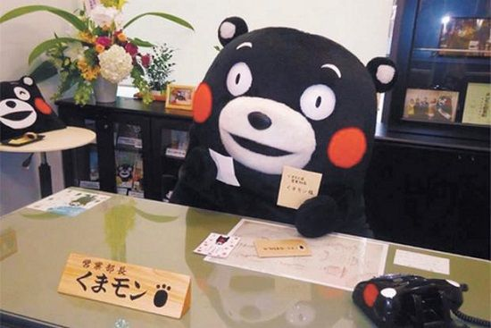
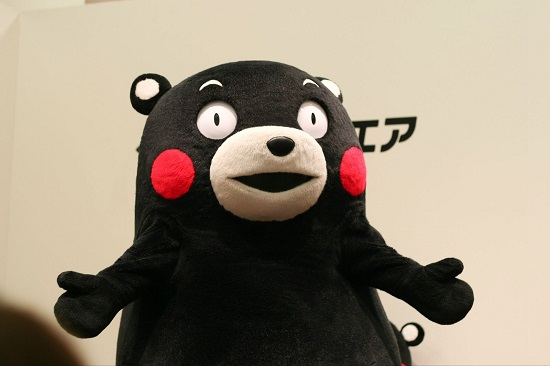
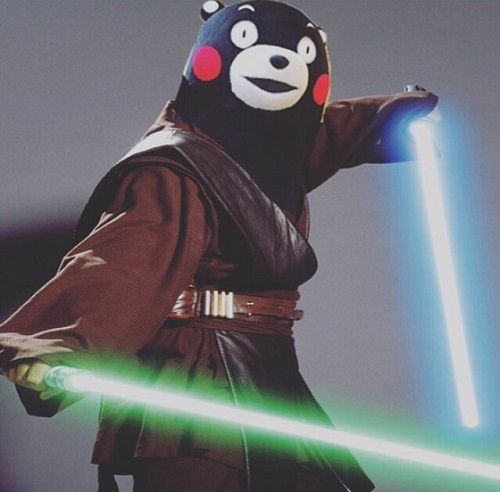
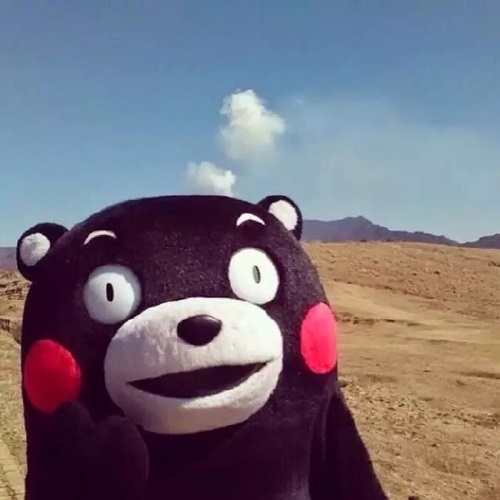
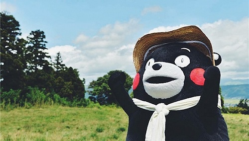
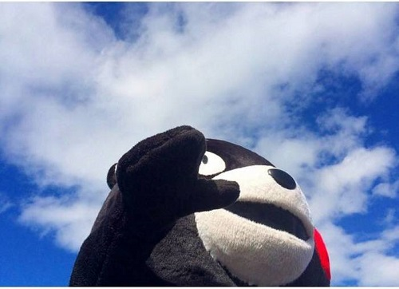

不愿意透露姓名的先生 2015-08-17 06:52:51
熊本熊（ Kumamon）诞生至今也有5年时间了，别看它的样子有些“普通”，实际上这是熊本县政府委托设计师水野学设计的，经过反复修改，在 2010 年诞生，并于 2011 年正式与大家见面，这里有一个链接链接到http://ife.baidu.com和众多吉祥物一样，它的使命就是为熊本县带来更多的观光以及其他附加收入，同时当地政府认为，九州新干线通车是激活熊本县经济的一个良好契机。如果没有熊本熊，估计没有多少人知道也没有多少人愿意来到这个看起来没什么特色的地方，日本南部的熊本县一直以来就是一个农业为主的城镇，与其他同类型的城镇一样没有什么十分独特的东西，来到九州的旅客一般都会选择去长崎、鹿儿岛等地。
熊本县的公务员承担着振兴经济的使命，他们认为，既然旅客们前往鹿儿岛大多会经过熊本，那么为什么不创造一些有价值的东西来吸引旅客呢？但是相比 Hello Kitty、叮当猫，要想一下子达到甚至超过它们的人气确实是一项不小的挑战，这年头卖萌谁不会呢，关键是如何卖萌才能显得独特并且容易被大家接受。

为此，熊本县政府人员展开了激烈讨论，其中一个大胆的提议获得了不少人的赞同，那就是让熊本熊成为当地众多“公务员”中的一份子，而不是单纯地搭个舞台让路过的观光客欣赏它强行卖萌。，点击后打开新窗口链接到http://ife.baidu.com这位特别的公务员当然也有自己的头衔——营业部长兼幸福部长，它要做的就是通过“旅行日记”的方式给大家介绍当地或是其他地方的特产、景点、美食，让大家感受到和它在一起的时光是幸福的，当然也不忘了发发名片，而当时这项计划的预算仅有 8000 万日元。不愿意透露姓名的女士 2015-09-02
熊来说，全球出名的可真不算少。小朋友看小熊维尼，少女喜欢轻松熊、宅女狂追咱们裸熊、宅男狂撸熊猫人和沃利贝尔...至于我，我挚爱Chewbacca（误）。
所以熊本熊——作为一个霓虹国小县城的小公务员——能从这么多知名熊前辈中胜出，实在是不容易。
这里有一个链接链接到http://ife.baidu.com
熊本熊 くまモン kumamon
生日：3月12日
性别：男孩子
年龄：不明
性格：好奇心旺盛，调皮
兴趣：萌熊体操
体型：脂肪肚
职业：公务员
技能：鱼类鉴定3级、日本象棋初段
熊本熊身上似乎总笼罩着“卧槽怎么是我！”的一种尴尬气场，甚至如果你早半年在百度搜索“熊本熊”，出现的大部分定语都是“最倒霉的吉祥物”。熊本熊的萌点特别奇怪...依我看，大概都在它做错事儿之后还想假装没发生过的镇定上...比如身任要职“熊本县营业部长”的熊本熊君去到某打糕厂视察工作，导致打糕厂发生重大安全事故。事故责任基本是熊本熊负全责。

好看的图片

好看的图片

好看的图片

好看的图片

好看的图片
你猜 2015-09-02
下面是一个表格
| 表头 | 表头 | 表头 |
|---|---|---|
| 不知道写什么 | 不知道写什么 | 操作 |
| 不知道写什么 | 不知道写什么 | 操作 |
| 不知道写什么 | 不知道写什么 | 操作 |
| 不知道写什么 | 不知道写什么 | 操作 |
| 总计 | 1000 | |
请输入邮箱地址:
邮箱地址要求按要求输入
请输入密码:请重复输入密码:
密码为6~16位英文数字
性别：男女 城市： 爱好:运动 艺术 科学 个人描述：